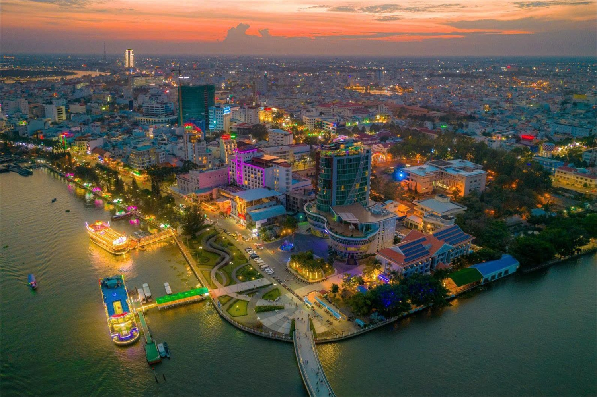
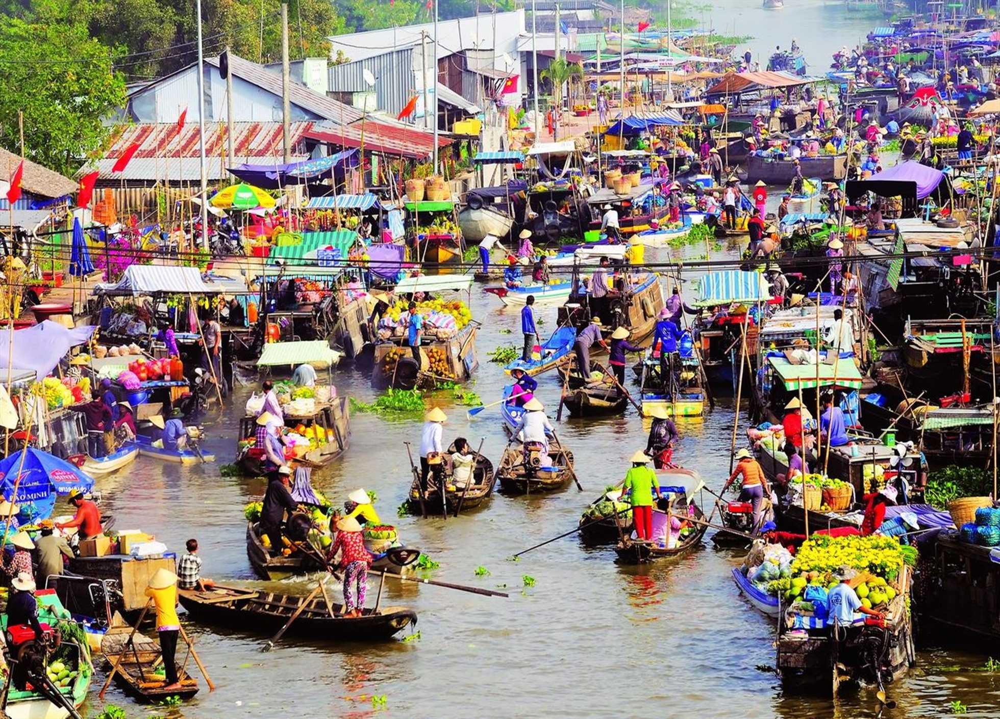
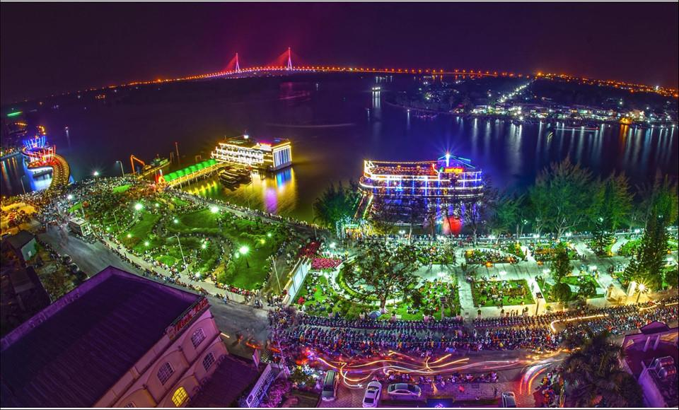

Vì sao nên đến Cần Thơ?
Cần Thơ là điểm đến hài hòa giữa nhịp sống hiện đại và vẻ đẹp miền sông nước truyền thống. Từ chợ nổi Cái Răng lúc bình minh, bến Ninh Kiều rực sáng về đêm đến các khu vườn trái cây xanh mát, thành phố mang lại cảm giác vừa thư thái vừa sống động. Du khách không chỉ tham quan mà còn được trực tiếp trải nghiệm nếp sống địa phương qua ẩm thực, giao thương trên sông và sự hiếu khách đặc trưng của người dân miền Tây.


Các địa điểm nổi tiếng ở Cần Thơ
Cần Thơ quy tụ nhiều công trình và điểm du lịch giàu dấu ấn văn hóa, lịch sử. Bến Ninh Kiều là biểu tượng nổi bật của thành phố, trong khi chợ nổi Cái Răng tái hiện sinh động nét giao thương trên sông đặc trưng vùng đồng bằng. Bên cạnh đó, Nhà cổ Bình Thủy, Thiền viện Trúc Lâm Phương Nam, Chùa Ông hay Đền thờ Vua Hùng đều là những điểm dừng chân đáng trải nghiệm.
Hãy khám phá các địa điểm sau đây

Chợ nổi Cái Răng

Pizza hủ tiếu Sáu Hoài

Bến Ninh Kiều

Nhà cổ Bình Thủy
Thiền viện Trúc Lâm Phương Nam
Cầu Cần Thơ
Chùa Ông
Nhà thờ Chánh Tòa Cần Thơ
Đền thờ Vua Hùng
Du lịch sinh thái
Du lịch sinh thái Cần Thơ mang đến không gian xanh mát, gần gũi thiên nhiên và đậm chất miệt vườn. Bạn có thể chèo xuồng qua các con rạch nhỏ, tham quan vườn trái cây, thưởng thức đặc sản địa phương và tận hưởng nhịp sống yên bình đặc trưng miền Tây.